Explore Pagadian City
Famous spots and municipalities in Zamboanga del Sur
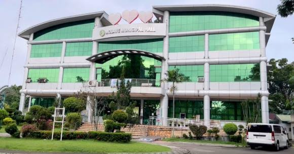
Molave
Molave began in the 1930s as Salug settlement in a marshy jungle.
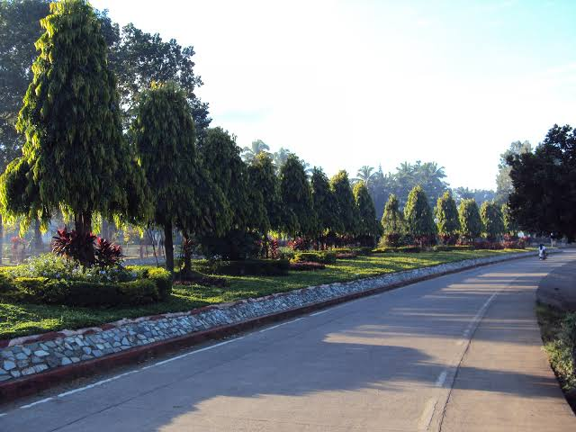
Aurora
Known for its cool climate due to high elevation.
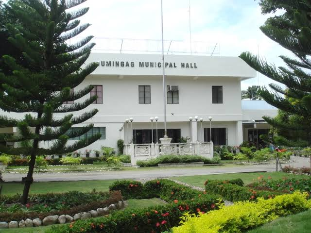
Dumingag
Landlocked town known for organic agriculture.
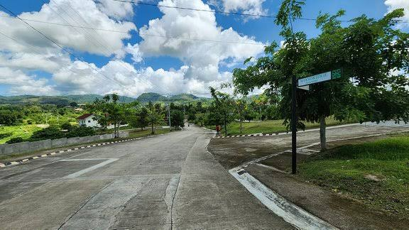
Josefina
A landlocked municipality in Zamboanga del Sur.
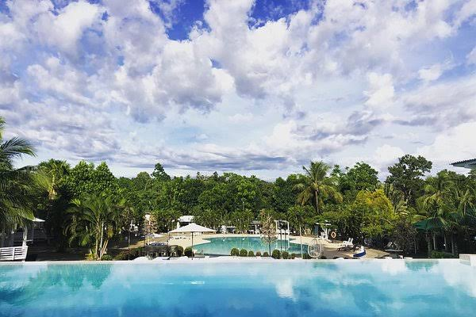
Mahayag
Named from “Boyed Mahayag” meaning forested mountains.
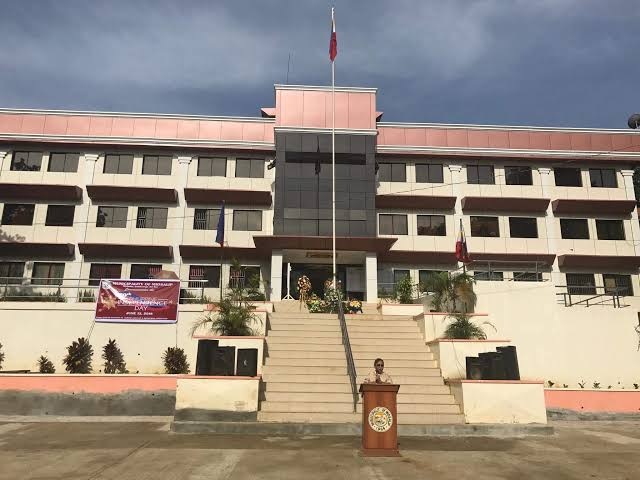
Midsalip
Located 46 km from Pagadian, known for peaceful setting.

Ramon Magsaysay
Formerly Liargo, landlocked town in the province.
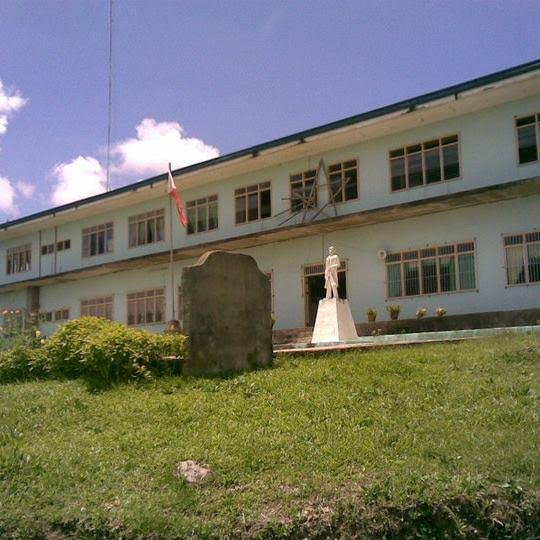
Sominot
A 5th class municipality in Zamboanga del Sur.
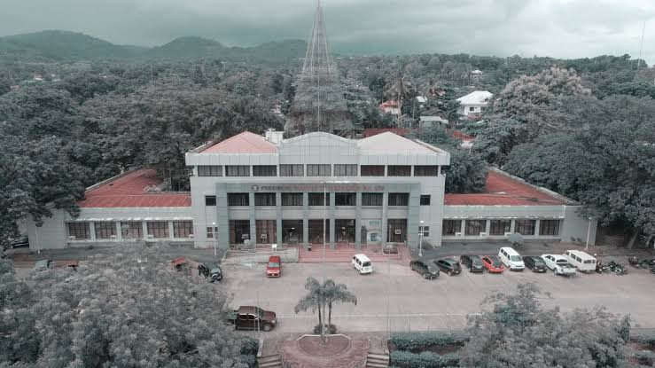
Tambulig
Historic municipality with natural wonders.
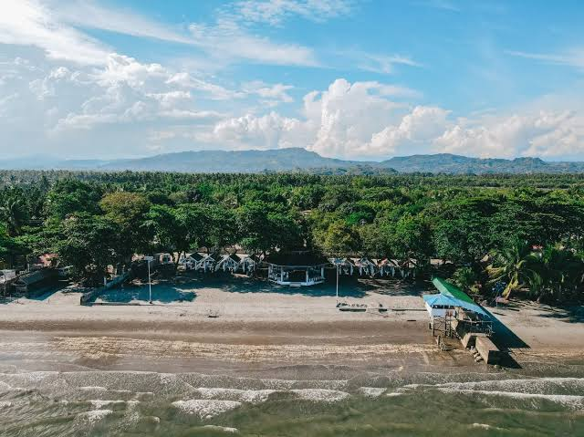
Tukuran
Peaceful growing municipality in the province.
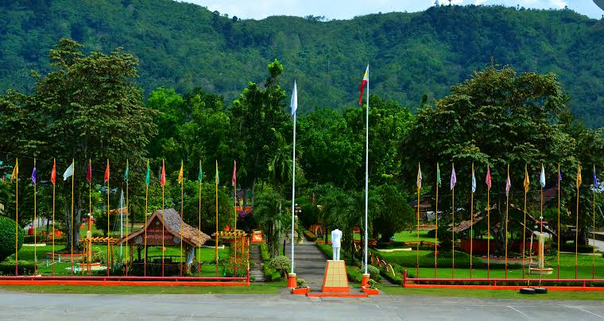
Bayog
Landlocked town in western Zamboanga del Sur.
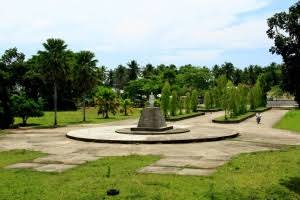
Dimataling
A coastal municipality in the province.
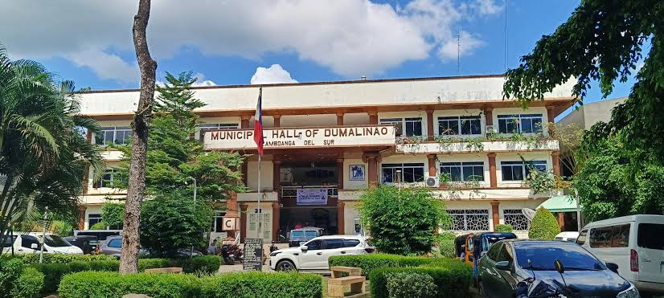
Dumalinao
A 4th class municipality in Zamboanga del Sur.
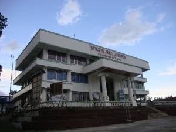
Guipos
A 4th class municipality in the province.
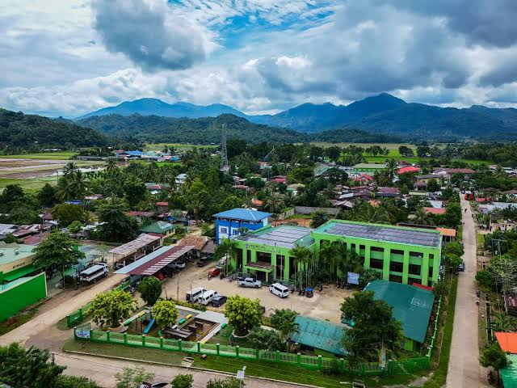
Kumalarang
Known for aquaculture in Dumanquillas Bay.
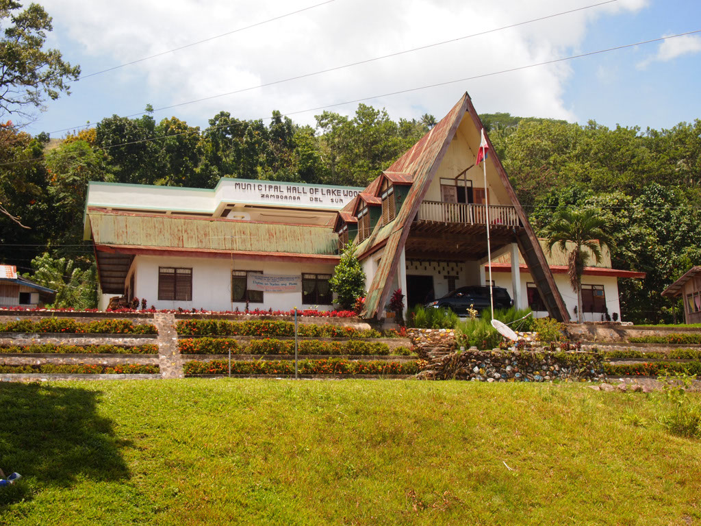
Lakewood
A landlocked municipality with beautiful lake views.
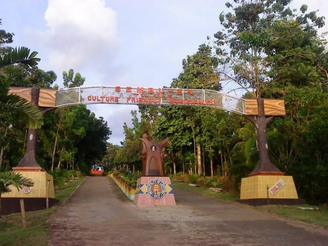
Lapuyan
Located in the southern part of the province.
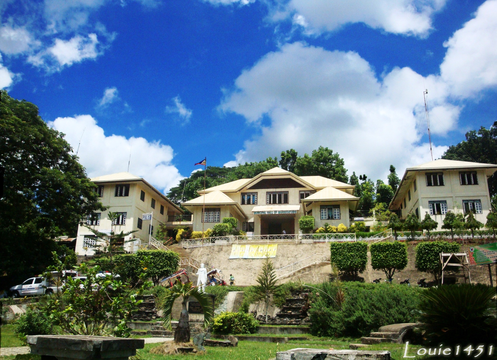
Margosatubig
One of the oldest municipalities in Zamboanga del Sur.
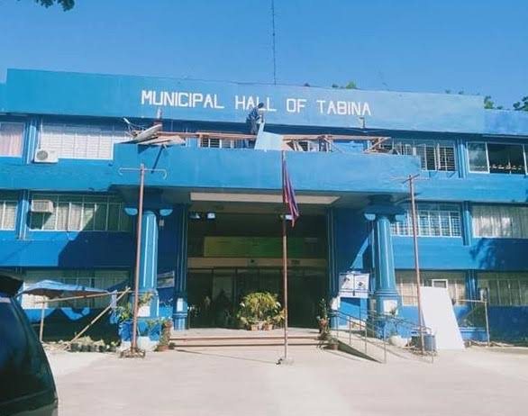
Tabina
Known for its coastline facing Celebes Sea and Illana Bay.